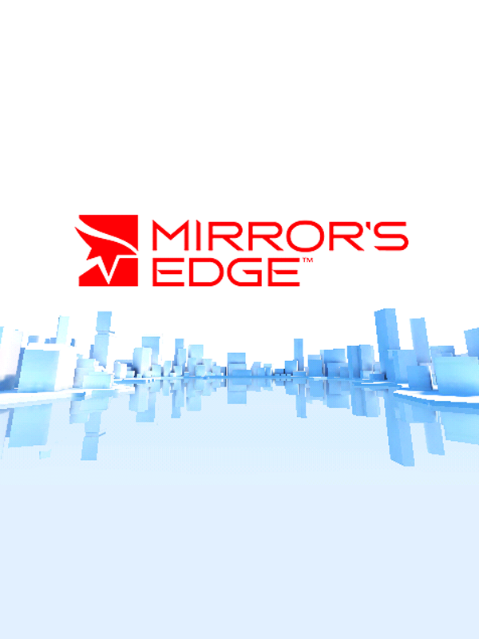

 |
|
| Tiempo de juego | 42s |
| Última actividad | 17/11/2025 12:42:23 |
| Añadido | 17/11/2025 12:42:14 |
| Modificado | 3/12/2025 11:54:21 |
| Estado de finalización | Jugado |
| Librería | Playnite |
| Fuente | |
| Plataforma | PC (Windows) |
| Fecha de lanzamiento | 2/9/2009 |
| Puntuación de la Comunidad | 79 |
| Puntuación de la Crítica | |
| Puntuación de usuario | |
| Género | Adventure |
| Desarrollador | IronMonkey Studios |
| Editor | Electronic Arts |
| Característica | Single Player Split Screen |
| Enlaces | Epic GOG |
| Tag | |
Olvidate de las armas. Olvidate de las coberturas. En Mirror's Edge, tu única arma es tu agilidad y el impulso.
Bienvenido a "La Ciudad". Una utopía (que en realidad es una distopía) súper limpia, blanca y vigilada. El gobierno lo ve todo.
Vos sos Faith Connors, una "Runner". Tu trabajo es correr. Saltar entre edificios, trepar paredes, deslizarte bajo cañerías... todo para entregar mensajes por fuera del sistema. Sos la anarquía en movimiento.
El juego entero está diseñado para que NUNCA PARES.
Mirror's Edge no es un juego de acción. Es un juego de ritmo. Es un "plataformas" en primera persona. Cuando lográs conectar tres saltos, una corrida por la pared y una deslizada sin frenar... te sentís Dios.
(Y sí, la música electrónica de Solar Fields es el 50% del juego. TEMAZOS)